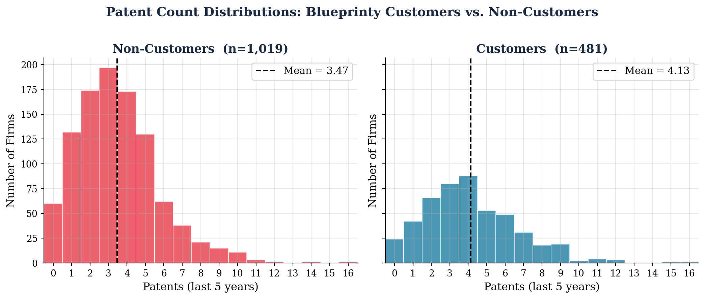
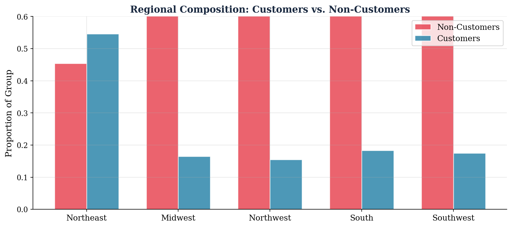
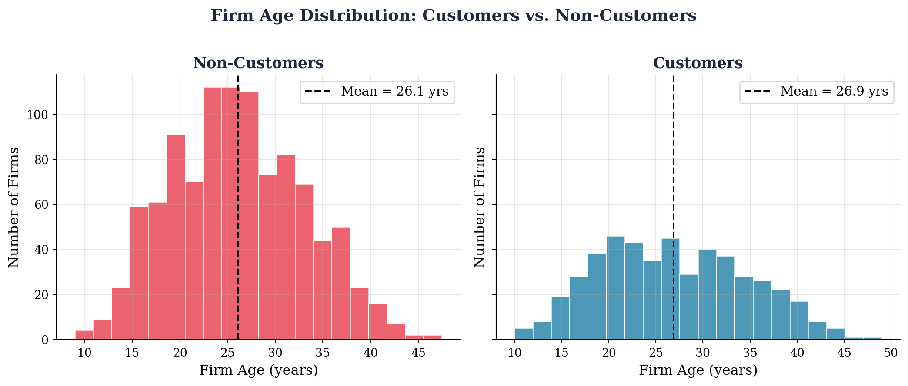
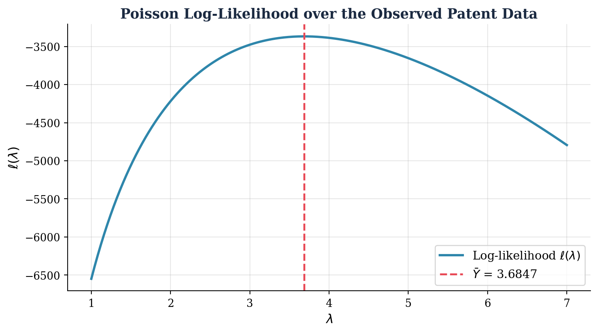
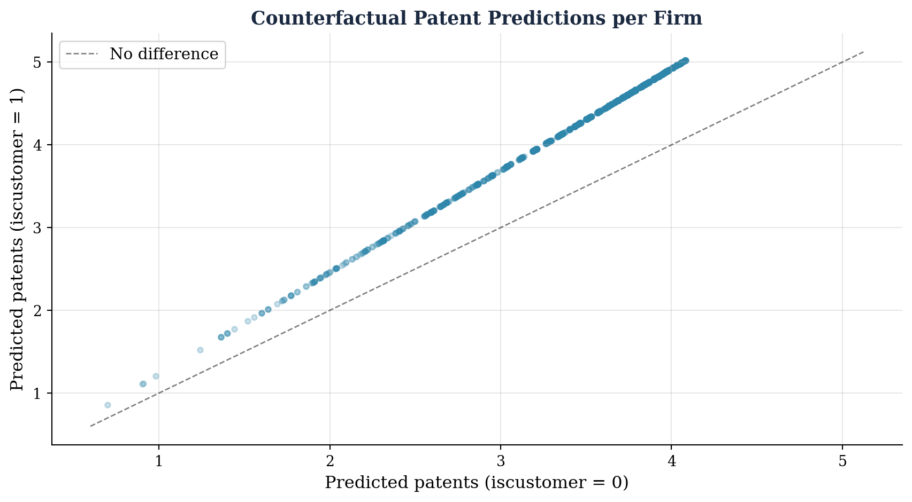

Poisson Regression and Maximum Likelihood Estimation
A Case Study: Does Blueprinty’s Software Help Engineering Firms Win More Patents?
Introduction
Can software make the difference between a patent application that succeeds and one that doesn’t? Blueprinty, a small firm that makes blueprint-design software specifically tailored for US patent filings, believes the answer is yes — and their marketing team would like to prove it with data.
The ideal experiment would track the same firms before and after adopting Blueprinty’s software, measuring whether their patent success rate improved. No such before-and-after data exists. Instead, Blueprinty has shared a cross-sectional dataset covering 1,500 mature engineering firms. For each firm we observe:
| Variable | Description |
|---|---|
patents |
Number of patents awarded in the past 5 years |
age |
Years since incorporation |
region |
US region (Northeast, Midwest, Northwest, South, Southwest) |
iscustomer |
Whether the firm uses Blueprinty’s software (1 = yes) |
The marketing team’s claim is tempting: Blueprinty customers have more patents on average. But this is not a randomised experiment. Firms that choose to pay for patent-application software are likely to be more patent-active, better-resourced, or located in innovation-heavy regions — regardless of whether the software itself helps. Any raw difference in patent counts could therefore reflect these pre-existing characteristics rather than a causal effect of the software.
The analysis below uses Poisson regression estimated via Maximum Likelihood to address exactly this problem: we control for age and region, and ask what residual association remains between Blueprinty customer status and patent awards. Building the model from scratch — deriving the likelihood, coding the log-likelihood, and finding the MLE numerically — gives us a transparent look inside a workhorse of modern count-data modelling.
Exploring the Data
Patent Counts by Customer Status
At first glance, the difference is striking. Blueprinty customers average 4.13 patents over the five-year window, compared with 3.47 for non-customers — a raw gap of 0.66 patents. Both distributions are right-skewed (many firms have few patents; a handful have many), consistent with what we would expect for count data. The customer distribution is shifted noticeably to the right, with a heavier tail reaching toward 10–16 patents.
Before interpreting this as evidence that Blueprinty’s software works, we need to ask: are the two groups otherwise comparable?
Regional Distribution by Customer Status

The regional mix differs meaningfully between the two groups. The Northeast is home to over half of Blueprinty’s customers but only about 37% of non-customers. Conversely, regions like the Midwest and South are underrepresented among customers. Because the Northeast is a hub for technology, biotech, and R&D-intensive industries, firms located there may be intrinsically more patent-productive — independently of any software they use. Failing to control for region would therefore overstate the apparent effect of Blueprinty.
Firm Age by Customer Status

Blueprinty’s customers tend to be younger firms: the average customer is 26.9 years old, versus 26.1 years for non-customers. Firm age likely has a non-linear relationship with patenting — young firms may not yet have the resources or the portfolio to patent heavily, while very mature firms may have moved beyond their peak innovation years. Including both age and age-squared in the regression will let the data speak to this curved relationship.
Taken together, the exploratory analysis reveals that Blueprinty’s customers are systematically different from non-customers: they are concentrated in the innovation-heavy Northeast and are younger on average. A simple comparison of patent means conflates these differences with any real software effect. The regression below controls for both.
A Simple Poisson Model via Maximum Likelihood
Why Poisson?
Patent counts are non-negative integers — firms can have 0, 1, 2, … patents but never −3 or 2.7. The Normal distribution, which places positive probability on all real numbers, is a poor fit for such data. The Poisson distribution is the natural starting point: it is defined on \(\{0, 1, 2, \ldots\}\), governed by a single rate parameter \(\lambda > 0\), and its mean equals its variance — a reasonable first approximation for count data.
The Poisson PMF is:
\[f(Y \mid \lambda) = \frac{e^{-\lambda}\,\lambda^{Y}}{Y!}, \qquad Y \in \{0, 1, 2, \ldots\}\]
Deriving the Log-Likelihood
Assuming the \(n\) patent counts \(Y_1, \ldots, Y_n\) are independent and identically distributed draws from \(\text{Poisson}(\lambda)\), the joint likelihood is the product of each observation’s PMF:
\[ L(\lambda \mid \mathbf{Y}) = \prod_{i=1}^{n} \frac{e^{-\lambda}\,\lambda^{Y_i}}{Y_i!} \]
Taking the natural log turns the product into a sum and eliminates the exponential:
\[ \ell(\lambda) = \log L(\lambda \mid \mathbf{Y}) = \sum_{i=1}^{n} \left(-\lambda + Y_i \log \lambda - \log Y_i!\right) = -n\lambda + \log\lambda \sum_{i=1}^{n} Y_i - \sum_{i=1}^{n} \log Y_i! \]
The last term does not depend on \(\lambda\), so it is a constant with respect to the optimisation.
Coding the Log-Likelihood
Code
def poisson_loglikelihood(lam, Y):
"""
Log-likelihood of Y ~ Poisson(lambda).
Uses scipy.special.gammaln for log(Y!) to handle large counts.
"""
return np.sum(-lam + Y * np.log(lam) - special.gammaln(Y + 1))Visualising the Log-Likelihood Curve

The curve is concave (as expected for a well-behaved log-likelihood) and peaks at exactly \(\lambda \approx 3.68\), which is the sample mean of the patent data. The dashed vertical line marks \(\bar{Y}\), confirming that the maximum of the log-likelihood is where we said it would be.
Analytical MLE
To find the MLE algebraically, differentiate \(\ell(\lambda)\) with respect to \(\lambda\) and set the result to zero:
\[ \frac{d\ell}{d\lambda} = -n + \frac{1}{\lambda}\sum_{i=1}^{n} Y_i = 0 \;\;\Longrightarrow\;\; \hat\lambda_{\text{MLE}} = \frac{1}{n}\sum_{i=1}^{n} Y_i = \bar{Y} \]
This “feels right”: \(\lambda\) is simultaneously the mean and the variance of a Poisson distribution, so the most natural estimate of \(\lambda\) from data is the sample mean.
Numerical MLE with scipy.optimize
Code
result_scalar = optimize.minimize_scalar(
lambda lam: -poisson_loglikelihood(lam, Y), # negate to minimise
bounds=(0.1, 15),
method="bounded"
)
lam_mle = result_scalar.x
print(f"Numerical MLE : λ̂ = {lam_mle:.6f}")
print(f"Sample mean : Ȳ = {Y.mean():.6f}")
print(f"Difference : = {abs(lam_mle - Y.mean()):.2e}")Numerical MLE : λ̂ = 3.684666
Sample mean : Ȳ = 3.684667
Difference : = 9.11e-07The two values agree to six decimal places, as expected from the closed-form derivation. The tiny residual difference comes from the finite tolerance of the numerical optimiser.
Poisson Regression
Extending the Model
The simple Poisson model assumes every firm shares the same rate \(\lambda\). That is clearly unrealistic: a young firm in the Midwest has a very different expected patent count than a mid-size Northeast firm that has been around for thirty years.
Poisson regression lets the rate vary by firm:
\[ Y_i \sim \text{Poisson}(\lambda_i), \qquad \lambda_i = \exp\!\left(X_i^\top \beta\right) \]
where \(X_i\) is a row vector of covariates and \(\beta\) is the coefficient vector to be estimated. The exponential link function is essential: \(X_i^\top \beta\) can take any real value, but \(\lambda_i\) must be strictly positive — the exponential maps \(\mathbb{R}\) onto \((0, \infty)\) exactly.
Updated Log-Likelihood
Code
def poisson_regression_loglikelihood(beta, Y, X):
"""
Log-likelihood for Poisson regression.
lambda_i = exp(X_i @ beta)
Clips X @ beta to prevent numerical overflow.
"""
Xb = np.clip(X @ beta, -500, 30)
lam = np.exp(Xb)
return np.sum(-lam + Y * Xb - special.gammaln(Y + 1))Constructing the Design Matrix
Code
# Reference region: Northeast (largest group, dropped to avoid collinearity)
regions_dummies = ["Midwest", "Northwest", "South", "Southwest"]
X = np.column_stack([
np.ones(len(df)), # intercept
df["age"].values, # age (linear)
df["age"].values ** 2, # age² (quadratic)
*[(df["region"] == r).astype(int).values # region dummies
for r in regions_dummies],
df["iscustomer"].values, # ← key variable
])
col_names = ["Intercept", "age", "age²",
"Midwest", "Northwest", "South", "Southwest",
"iscustomer"]
print(f"Design matrix shape: {X.shape}")
print(f"Columns: {col_names}")Design matrix shape: (1500, 8)
Columns: ['Intercept', 'age', 'age²', 'Midwest', 'Northwest', 'South', 'Southwest', 'iscustomer']Age and age-squared are both included because the relationship between firm maturity and patent output is unlikely to be perfectly linear — firms tend to ramp up their innovation activity before eventually plateauing or slowing down. Including the quadratic term gives the model the flexibility to capture this arc.
One region is omitted (Northeast) to serve as the baseline. Including all five would create perfect collinearity with the intercept column (the five dummies would always sum to 1), making the system unidentifiable. The Northeast coefficients for Midwest, Northwest, South, and Southwest therefore represent differences relative to the Northeast.
Finding the MLE with scipy.optimize
Code
neg_ll = lambda beta: -poisson_regression_loglikelihood(beta, Y, X)
result_reg = optimize.minimize(
neg_ll,
x0 = np.zeros(X.shape[1]), # start at all-zeros
method = "BFGS",
options = {"maxiter": 10_000, "gtol": 1e-6},
)
beta_hat = result_reg.x
print(f"Log-likelihood at MLE : {-result_reg.fun:.2f}")
print(f"iscustomer coefficient: {beta_hat[-1]:.4f}")Log-likelihood at MLE : -3258.07
iscustomer coefficient: 0.2076Standard Errors from the Hessian
The curvature of the log-likelihood at the MLE tells us how precisely \(\beta\) is estimated. Formally, the observed Fisher information is \(\mathcal{I}(\hat\beta) = -\nabla^2\ell(\hat\beta)\), and the asymptotic variance of the MLE is its inverse:
\[ \text{Var}(\hat\beta) \approx \mathcal{I}(\hat\beta)^{-1} = \left[-\nabla^2\ell(\hat\beta)\right]^{-1} \]
Standard errors are the square roots of the diagonal elements.
Code
import numdifftools as nd
# Numerical Hessian of the *negative* log-likelihood at the MLE
H = nd.Hessian(neg_ll)(beta_hat)
H_inv = np.linalg.inv(H)
se_mle = np.sqrt(np.diag(H_inv))Comparison with statsmodels.GLM
As a gold-standard check, we fit the same model using statsmodels.GLM with the Poisson family. GLM software uses the analytic Fisher information (the expected Hessian), which is numerically more stable than the finite-difference approximation above — hence the slight differences in standard errors, especially for highly correlated predictors like age and age².
Code
Xdf = pd.DataFrame(X, columns=col_names)
glm_result = sm.GLM(Y, Xdf, family=sm.families.Poisson()).fit()statsmodels.GLM (analytic Fisher information).
| Poisson Regression Results | ||||
| Outcome: Number of patents awarded in past 5 years | ||||
| Variable | Coefficient | Std. Error | Inference | |
|---|---|---|---|---|
| z-value | p-value | |||
| Intercept | −0.4797 | 0.1832 | −2.6193 | 0.009 |
| age | 0.1486 | 0.0139 | 10.7162 | < 0.001 |
| age² | −0.0030 | 0.0003 | −11.5132 | < 0.001 |
| Midwest | −0.0292 | 0.0436 | −0.6686 | 0.504 |
| Northwest | −0.0467 | 0.0466 | −1.0029 | 0.316 |
| South | 0.0274 | 0.0451 | 0.6073 | 0.544 |
| Southwest | 0.0214 | 0.0385 | 0.5563 | 0.578 |
| iscustomer | 0.2076 | 0.0309 | 6.7192 | < 0.001 |
| Reference category for region: Northeast. Highlighted row = key variable of interest. | ||||
Interpreting the Coefficients
Because Poisson regression uses a log link, coefficients are log rate ratios — each unit increase in a predictor multiplies the expected patent count by \(e^{\hat\beta_k}\).
Age (\(\hat\beta = 0.149\), \(e^{\hat\beta} \approx 1.16\)): An additional year of age is associated with about a 16% higher patent rate, holding everything else fixed. But this effect diminishes with age because of the negative quadratic term below.
Age² (\(\hat\beta = -0.003\)): The negative sign confirms the inverted-U pattern: patent activity rises with age but eventually tapers off. The model implies a peak patenting age of roughly \(\hat\beta_{\text{age}} / (2 \times |\hat\beta_{\text{age}^2}|) \approx 25\) years.
Region dummies (Midwest, Northwest, South, Southwest): None of these coefficients is statistically distinguishable from zero at conventional levels. After controlling for firm age and customer status, firms outside the Northeast do not have systematically higher or lower patent counts. This suggests the raw regional differences we observed earlier were driven largely by the age and customer-mix composition of those regions.
iscustomer (\(\hat\beta = 0.208\), \(e^{\hat\beta} \approx 1.23\), \(p < 0.001\)): The headline result. All else equal, firms using Blueprinty’s software are predicted to have approximately 23% more patents than otherwise-identical firms that do not use the software. This coefficient is precisely estimated and highly statistically significant.
The Effect of Blueprinty’s Software
Counterfactual Prediction
The 23% rate ratio is informative but abstract. To translate it into a concrete, policy-relevant number — how many additional patents does Blueprinty actually bring in? — we construct two counterfactual datasets that differ only in the iscustomer column:
Code
# Counterfactual 0: every firm is a non-customer
X0 = X.copy()
X0[:, -1] = 0
# Counterfactual 1: every firm is a customer
X1 = X.copy()
X1[:, -1] = 1
# Predicted expected patents under each scenario (using GLM params)
beta_glm = glm_result.params.values
y0_hat = np.exp(X0 @ beta_glm)
y1_hat = np.exp(X1 @ beta_glm)
avg_effect = np.mean(y1_hat - y0_hat)
print(f"Avg predicted patents — all non-customers : {y0_hat.mean():.4f}")
print(f"Avg predicted patents — all customers : {y1_hat.mean():.4f}")
print(f"Average treatment effect (ATE) : {avg_effect:.4f}")Avg predicted patents — all non-customers : 3.4362
Avg predicted patents — all customers : 4.2290
Average treatment effect (ATE) : 0.7928
Every point in the scatter plot lies above the 45-degree line — by construction, setting iscustomer = 1 always raises \(\hat\lambda_i\). The gap is larger for firms predicted to have many patents (older, Northeast-based firms), because the Poisson rate ratio scales multiplicatively.
The Bottom Line
Estimated average effect of Blueprinty: +0.79 patents per firm (over 5 years)
Holding firm age and region fixed at their observed values for each of the 1,500 firms in the dataset, switching every firm from non-customer to customer is predicted to increase the average 5-year patent count by approximately 0.79 patents — nearly one additional approved patent every five years per firm.
Caveats
This finding is consistent with Blueprinty’s marketing claim, but two important limitations apply:
Observational study, not a randomised trial. Firms that adopt Blueprinty are different in ways we cannot observe — motivation to patent, quality of in-house legal teams, R&D spending. These unobserved factors could explain part (or all) of the residual association between
iscustomerand patent counts, even after controlling for age and region. A randomised rollout of the software would be the gold standard for identifying a causal effect.Model assumptions. Poisson regression imposes that the conditional variance equals the conditional mean. Real patent data often show overdispersion (variance exceeding the mean), which would lead to underestimated standard errors. A negative-binomial regression would relax this assumption and is a natural robustness check.
With those caveats in mind, the Poisson regression provides the best available evidence from this dataset that Blueprinty’s software is associated with meaningfully higher patent awards — roughly one additional patent per firm per five years, even after adjusting for the demographic differences between customers and non-customers.